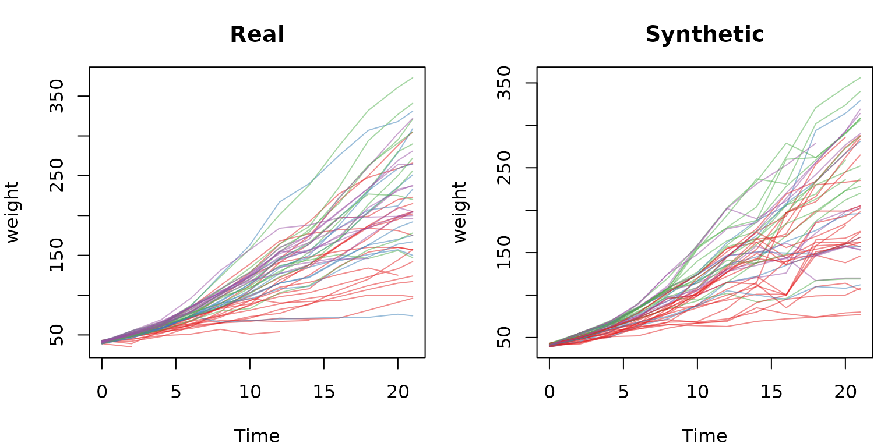

Longitudinal data (repeated measures)
longitudinal.RmdRepeated measures via wide-format
A plain copula treats every row as independent, which is wrong for
repeated measures: a subject’s value at one timepoint is correlated with
its value at the next. simulate_longitudinal() handles this
by reshaping to wide format (one row per subject, a
column per feature x time), reusing
simulate_dataset(), and reshaping back. You just name the
id and time columns.
This turns within-subject temporal autocorrelation into ordinary between-column correlation, so everything applies for free: per-timepoint marginals capture the trajectory shape (e.g. growth), the missingness model reproduces dropout, and time-invariant covariates ride along as single columns.
ChickWeight
datasets::ChickWeight is 50 chicks weighed over 12
timepoints, with a time-invariant Diet:
data(ChickWeight)
sim <- simulate_longitudinal(ChickWeight, id = "Chick", time = "Time",
seed = 1, verbose = FALSE)
class(sim) # "synthetica_long"
#> [1] "synthetica_long"
sim$static # "Diet" auto-detected (constant within Chick)
#> [1] "Diet"
sim$features # "weight" (time-varying)
#> [1] "weight"
head(sim$data)
#> weight Time Chick Diet
#> 1 43 0 subj1 1
#> 2 51 2 subj1 1
#> 3 61 4 subj1 1
#> 4 72 6 subj1 1
#> 5 84 8 subj1 1
#> 6 87 10 subj1 1The growth curve is preserved
Each timepoint has its own marginal, so the mean trajectory emerges automatically:
data.frame(
Time = sort(unique(ChickWeight$Time)),
real = round(tapply(ChickWeight$weight, ChickWeight$Time, mean), 1),
syn = round(tapply(sim$data$weight, sim$data$Time, mean), 1)
) |>
kable(caption = "Mean weight by timepoint: real vs synthetic") |>
kable_styling(full_width = FALSE, font_size = 11)| Time | real | syn | |
|---|---|---|---|
| 0 | 0 | 41.1 | 41.1 |
| 2 | 2 | 49.2 | 49.7 |
| 4 | 4 | 60.0 | 60.8 |
| 6 | 6 | 74.3 | 74.9 |
| 8 | 8 | 91.2 | 92.7 |
| 10 | 10 | 107.8 | 110.8 |
| 12 | 12 | 129.2 | 134.2 |
| 14 | 14 | 143.8 | 151.3 |
| 16 | 16 | 168.1 | 164.2 |
| 18 | 18 | 190.2 | 191.3 |
| 20 | 20 | 209.7 | 210.7 |
| 21 | 21 | 218.7 | 214.6 |
Trajectories look like growth, not noise
op <- par(mfrow = c(1, 2), mar = c(4, 4, 3, 1))
cols <- c("#E41A1C", "#377EB8", "#4DAF4A", "#984EA3")
spaghetti <- function(df, title) {
plot(NA, xlim = range(df$Time), ylim = range(df$weight, na.rm = TRUE),
xlab = "Time", ylab = "weight", main = title)
for (ch in unique(df$Chick)) {
d <- df[df$Chick == ch, ]
lines(d$Time, d$weight, col = adjustcolor(cols[as.integer(d$Diet)[1]], 0.5))
}
}
spaghetti(ChickWeight, "Real")
spaghetti(sim$data, "Synthetic")
par(op)Within-subject correlation is preserved
The point of the wide-format trick is that a subject’s weights across time stay coupled. Compare the day-0 vs day-20 correlation, aligned by chick:
pair_cor <- function(df, t0, t1) {
a <- df[df$Time == t0, c("Chick", "weight")]
b <- df[df$Time == t1, c("Chick", "weight")]
m <- merge(a, b, by = "Chick")
cor(m[[2]], m[[3]], use = "complete.obs")
}
c(real = round(pair_cor(ChickWeight, 0, 20), 3),
syn = round(pair_cor(sim$data, 0, 20), 3))
#> real syn
#> -0.320 -0.354Chicks that died early reproduce as realistic
dropout – (subject, time) rows with no
observed feature are absent from the synthetic long output, just as in
the input.
Other designs
The same recipe covers:
-
Before/after RCTs – two timepoints become
baseline/followupcolumns; the pre-post correlation and any treatment shift are preserved. - Crossover trials – one column per period.
- Modest biomarker panels – a handful of analytes over several visits.
Scope
The wide frame has features x timepoints columns, so
this approach is for the tractable regime (up to a few hundred such
columns); a warning fires beyond that. High-dimensional longitudinal
’omics (thousands of features x several timepoints) needs a different
method – subject-level random effects with an autoregressive temporal
residual structure – and is out of scope here. The time grid is the set
of unique observed time values, so genuinely irregular or continuous
times should be binned to a common grid before calling.